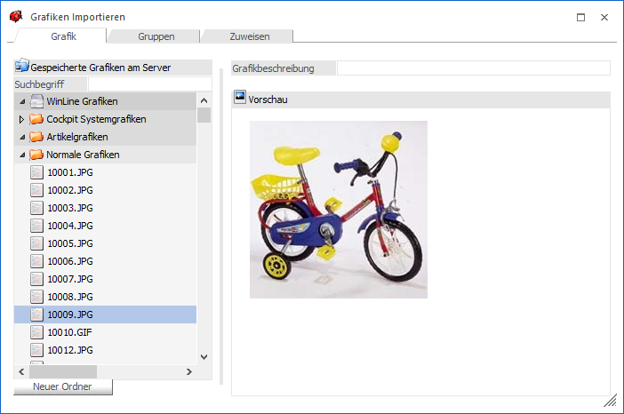
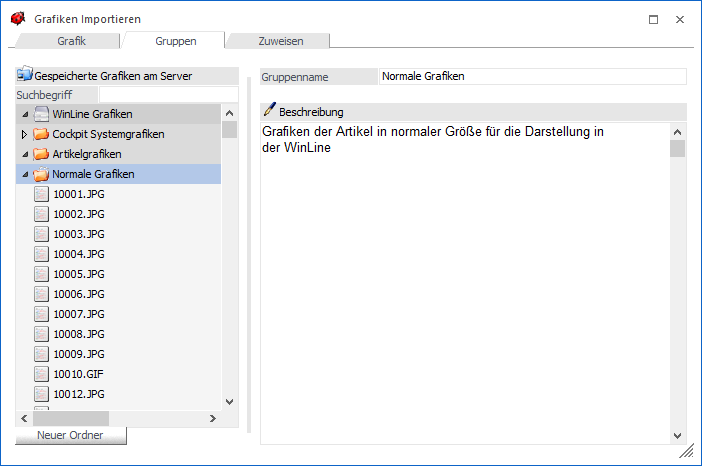
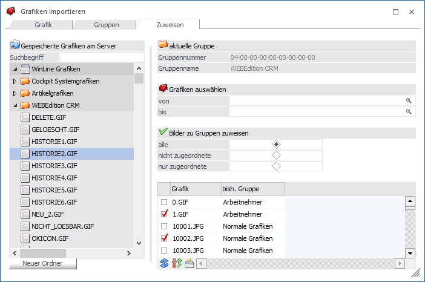
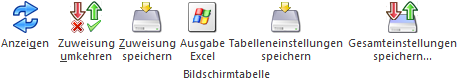

In diesem Fenster, welches über den Menüpunkt…
1 WinLine START
1 Datei
1 Grafik Importieren
… aufgerufen wird, können alle Grafiken verwaltet werden, die in der WinLine und in der WEB Edition verwendet werden. Die hier eingetragenen Grafiken werden in der zentralen Systemdatenbank verwaltet.
Auf diesen Grafiken kann in den diversen Programmteilen (Artikelstamm, Textbausteine, etc.) zugegriffen werden.
Das Fenster ist in drei Teilbereiche unterteilt, die auch unterschiedliche Funktionen aufweisen:
Register "Grafik"

Im Register "Grafik" werden die Grafiken selbst verwaltet. In der Baumstruktur auf der linken Seite werden alle Grafikdateien angezeigt, die bereits in der zentralen Datenbank gespeichert wurden.
Achtung
Es können maximal 32000 Datensätze angezeigt werden. Sollte die Gesamtanzahl an Grafikdateien diese Zahl überschreiten, dann werden nur die ersten 32000 Datensätze angezeigt und es erscheint eine Meldung.
Ø Filter
Über die Eingabe eines Dateinamens, kann das Ergebnis in der Baumstruktur eingeschränkt werden.
Hinweis
Dieses ist z.B. notwendig, wenn mehr als 32000 Datensätze (Grafikdateien) vorhanden sind.
Ø Beschreibung
Zu der aktuell gewählten Grafik kann in diesem Feld ein Beschreibungstext hinterlegt werden.
Ø Neuer Ordner
Mittels dieses Buttons können neue Ordner angelegt werden. Die Ordner können mehrstufig, in der Hierarchiebreite 9 und in der Tiefe 99 Ordner, angelegt werden.
Hinweis
Per Drag & Drop können Grafiken in Ordner verschoben werden.
Register "Gruppen"

Im Register "Gruppen" können die Grafiken in Gruppen zusammengefasst werden, wobei die Gruppen in mehrere Ebenen unterteilt werden können (bis zu 9 Ebenen).
Ø Neuer Ordner
Mittels dieses Buttons können neue Ordner angelegt werden. Die Ordner können mehrstufig, in der Hierarchiebreite 9 und in der Tiefe 99 Ordner, angelegt werden.
Hinweis
Per Drag & Drop können Grafiken in Ordner verschoben werden.
Ø Entfernen-Taste
Mit Hilfe der Entfernen-Taste können Ordner wieder gelöscht werden. Die ggf. untergeordneten Grafiken werden dann mit gelöscht.
Register "Zuweisen"

Im Register "Zuweisen" können Grafiken zu bestehenden Grafik-Gruppen zugeordnet werden. Dieses ist dann sinnvoll, wenn viele Grafiken verwalten werden (z.B. in Zusammenhang mit der WEBEdition) - damit können die Grafiken übersichtlicher bearbeitet werden.
Ablauf
Zuerst muss die Gruppe ausgewählt werden, der die Grafiken zugeordnet werden sollen. Diese wird dann auch in der Rubrik "aktuelle Gruppe" angezeigt.
Über die Eingabefelder…
Ø Grafiken auswählen von / bis
… kann eine Selektion der Grafiken vorgenommen werden, die Grafikgruppen zugeordnet werden sollen. Dabei kann über die Matchcodefunktion (F9-Taste) nach allen vorhandenen Grafiken gesucht werden.
Über die Option kann gesteuert werden, welche Grafiken angezeigt werden sollen:
ü Alle
Es werden alle Grafiken
gemäß der Selektion (Grafiken auswählen) angezeigt.
ü Nicht zugeordnete
Es werden
alle Grafiken angezeigt, die noch keiner bzw. nicht der aktuell ausgewählten
Grafikgruppe zugeordnet sind.
ü Nur zugeordnete
Hier werden
alle Grafiken angezeigt, die bereits der aktuell ausgewählten Grafikgruppe
zugeordnet wurden.
Durch Anwahl des Tabellenbuttons "Anzeigen" wird die Grafiktabelle mit den entsprechenden Grafiken gefüllt.
In der Tabelle wird neben dem Grafiknamen auch die bisherige Gruppe angezeigt. Durch Aktivieren der Checkbox in der ersten Spalte kann definiert werden, ob die Grafik der aktuell ausgewählten Gruppe zugeordnet werden soll.
Durch Anklicken des Tabellenbuttons "Zuweisung Speichern" wird die vorgenommene Zuweisung abgespeichert und die Grafiken sind somit in den entsprechenden Gruppen vorhanden.
Tabellenbuttons

Ø Anzeigen
Durch Anwahl des Buttons "Anzeigen" wird die Grafiktabelle mit den gewünschten Grafiken gefüllt.
Ø Zuweisung umkehren
Mit Hilfe des Buttons "Zuweisung umkehren" kann die getroffene Selektion ins Gegenteil verkehrt werden.
Ø Zuweisung speichern
Durch Anklicken des Buttons "Zuweisung Speichern" wird die vorgenommene Zuweisung abgespeichert.
Ø Tabelleneinstellungen speichern
Die Spalten einer Tabelle können grundsätzlich an beliebige Positionen verschoben, bzw. in der Breite entsprechend angepasst werden. Durch Anwahl des Buttons "Tabelleneinstellungen speichern" werden die Einstellungen benutzerspezifisch gespeichert und bei dem nächsten Aufruf des Programmpunktes wieder vorgeschlagen.
Ø Gesamteinstellungen speichern
Im Gegensatz zu "Tabelleneinstellungen speichern" können mit "Gesamteinstellungen speichern" mehrere Tabellenaufbauten gespeichert und nach Wunsch geladen werden. Zusätzlich werden Sonderfunktionen der Tabelle (z.B. "Spalte gruppieren") ebenfalls bei der Speicherung bedacht.
Buttons
Ø Ok
Durch Anklicken des Ok-Buttons bzw. der Taste F5 werden alle importierten Grafiken, Bemerkungen, Kommentare und Zuweisungen gespeichert.
Ø Ende
Durch Drücken des Ende-Buttons oder der ESC-Taste wird das Fenster geschlossen.
Ø Löschen
Durch Anklicken des Löschen-Buttons wird die gerade aktive Grafik gelöscht.
Ø Importieren
Nach Drücken dieses Buttons kann eine Grafik ausgewählt werden, die in die Datenbank übernommen werden soll. Das Hinzufügen von Grafiken kann auch mittels Drag & Drop vorgenommen werden, wobei hier auch mehrere Grafiken auf einmal in die zentrale Datenbank übernommen werden können.
Achtung
Es können Grafiken von maximal 15 MB eingefügt werden.
Ø Exportieren
Mittels dieses Buttons kann die aktive Grafik exportiert werden.